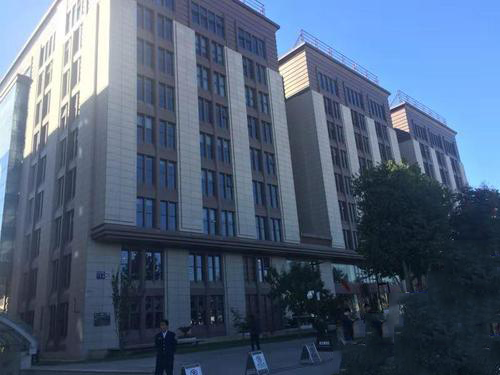

<!DOCTYPE html>
<html>
<head>
  <meta http-equiv="Content-Type" content="text/html; charset=utf-8" />
  <meta name="viewport" content="initial-scale=1.0, user-scalable=no" />
  <style type="text/css">
    body, html,#allmap {width: 100%;height: 100%;overflow: hidden;margin:0;font-family:"微软雅黑";}
  </style>
  <link rel="stylesheet" type="text/css" href="../../../CSS/css/public.css">
  <script type="text/javascript" src="//api.map.baidu.com/api?type=webgl&v=1.0&ak=xawyLCG98YwSSNijrWGWiwU95VRHWCBf"></script>
  <title>公司地址</title>
</head>
<body>
<div id="allmap"></div>
</body>
</html>
<script type="text/javascript">
  // 百度地图API功能
  var map = new BMapGL.Map("allmap");
  map.enableScrollWheelZoom();   	//启用滚轮放大缩小，默认禁用
  map.enableContinuousZoom();    	//启用地图惯性拖拽，默认禁用
  //搜索
  var local = new BMapGL.LocalSearch(map, {
    renderOptions:{map: map}
  });
  //local.search("北京市昌平区");  //百度地图关键字检索 默认加载一次
  //图标
  //var myIcon = new BMapGL.Icon("image/.png", new BMapGL.Size(52, 52));
  //点
  var point = new BMapGL.Point(116.383573,40.039259);
  map.centerAndZoom(point, 15);// 初始化地图,设置城市和地图级别。
  var marker = new BMapGL.Marker(point, {
    //icon: myIcon
  });  // 创建标注
  map.addOverlay(marker);// 将标注添加到地图中
  // 创建图文信息窗口
  var sContent = `<h4 style='margin:0 0 2px 0;font-family: 宋体'></h4>
    
     <div style='margin:0;line-height:1.5;font-size:13px;text-indent:2em;padding-top: 0.5rem;font-family: 宋体'>
    公司简介：主要从事财税行业信息化建设，
    有二十多年的财税业务及财政改革与发展经验。
    </div>
   <div style='margin:0;line-height:1.5;font-size:13px;text-indent:2em;padding-top: 0.5rem;font-family: 宋体'>
     地址：
    </div>
    <div style='margin:0;line-height:1.5;font-size:13px;text-indent:2em;padding-top: 0.5rem;font-family: 宋体'>
    联系电话：
    </div>
    </div>`;
  var opts = {
    width : 470,     // 信息窗口宽度
    height: 200,     // 信息窗口高度
  }
  var infoWindow = new BMapGL.InfoWindow(sContent,opts);  // 创建信息窗口对象
  marker.addEventListener("click", function(){
    map.openInfoWindow(infoWindow, point); //开启信息窗口
    document.getElementById('imgDemo').onload = function () {
      infoWindow.redraw(); // 防止在网速较慢时生成的信息框高度比图片总高度小，导致图片部分被隐藏
    };
  });
  map.openInfoWindow(infoWindow, point);
</script>
